操作系统原理 · 第 4 章 进程及进程管理
4.6 进程互斥与同步的实现
上一节讲了两种同步机构——锁与信号灯，这一节把它们落到具体的程序描述上：先用上锁/开锁原语和信号灯的 P、V 操作实现进程互斥，再归纳两类同步问题（合作进程的执行次序、共享缓冲区的合作进程）的解法，最后给出生产者—消费者问题的一般解答。这一节的内容是第 4 章的核心，也是第 5 章讨论死锁的直接背景。
1. 用上锁原语和开锁原语实现进程互斥
4.5 节给出的上锁原语 lock 与开锁原语 unlock，是互斥最直接的实现手段。按那里的约定，锁变量 w 的初值为 0：进程进入临界区前先执行上锁原语，它检测 w，若 w 已被置 1 说明临界资源正被占用，进程就原地等待（自旋锁）或进入 w 的等待队列（普通锁 mutex）；若 w 为 0，则把 w 置 1，表示自己占用了资源，然后进入临界区。临界区执行完毕后执行开锁原语，把 w 置 0，交还资源。
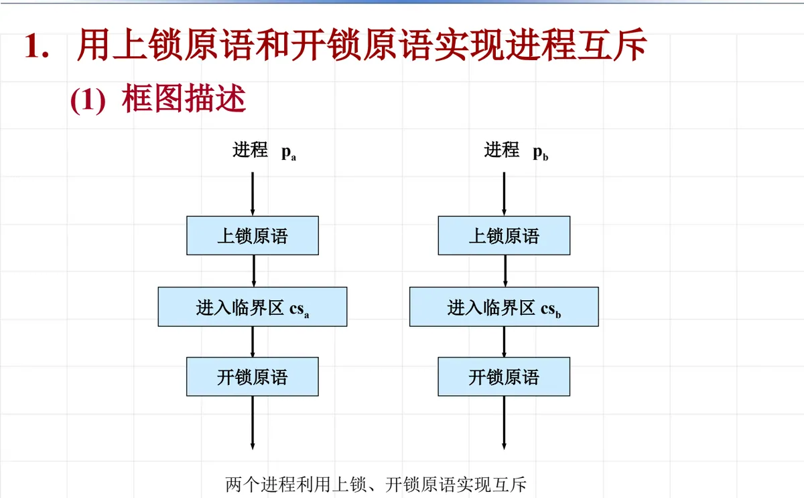
把这一过程写成程序描述，就是程序 task1：锁变量 w 定义为主程序中的共享变量，初值为 0；两个进程 pa、pb 并发执行，各自的临界区 csa、csb 被上锁原语和开锁原语夹在中间。
/* 程序 task1 */
main( )
{ int w = 0; /* 互斥锁，初值为 0 */
cobegin
pa( ); pb( );
coend
}
pa( )
{ lock(w);
csa;
unlock(w);
}
pb( )
{ lock(w);
csb;
unlock(w);
}两个进程对同一个锁变量 w 施加原语操作，而原语是不可分割的，因此同一时刻只可能有一个进程完成「测试 w → 置 w 为 1」这一步，也就只有一个进程能进入自己的临界区：上锁原语负责阻止后来的进程，开锁原语负责把资源交出去。这就是互斥的实现机制。
2. 用信号灯的 P、V 操作实现互斥
更常用的做法是用信号灯。只要为临界资源设一个互斥信号灯 mutex，初值为 1（表示资源可用），每个进程在进入临界区之前做一次 P 操作、离开临界区之后做一次 V 操作，就实现了互斥。
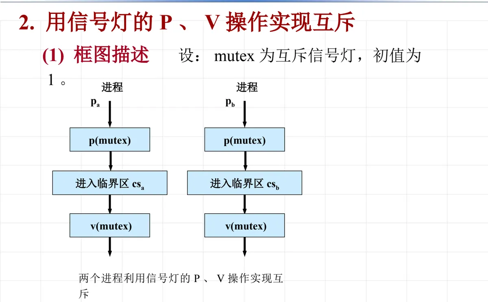
对应的程序描述是：主程序中定义互斥信号灯 mutex 并置初值 1，然后由 cobegin…coend 并发启动 pa 与 pb；pa 执行 p(mutex)、csa、v(mutex)，pb 执行 p(mutex)、csb、v(mutex)。P 操作把 mutex 减 1，减到负数就把自己挂到该信号灯的等待队列上；V 操作把 mutex 加 1，并负责唤醒等待队列上的进程。
（1）互斥信号灯的可能取值
信号灯的取值范围能反过来告诉我们系统此刻处在什么状态。对于 两个并发进程共用一把互斥锁的情形，互斥信号灯的值只可能取 1、0、−1 三个值：
- mutex = 1：没有进程进入临界区，资源空闲；
- mutex = 0：已有一个进程进入临界区，但没有别的进程在等待；
- mutex = −1：一个进程已进入临界区，另一个进程正在等待进入，其绝对值就是等待队列中的进程数。
把并发进程数推广到 n 个（课件中的习题 4-12 正是这个一般化的问题：n 个并发进程共用一个公共变量，要求写出用信号灯实现互斥的程序描述并说明取值含义），互斥信号灯的取值可能是 1, 0, −1, …, −(n−1)。由此可以总结出三条常用推论：
- 推论 1：若信号灯 s 为正值，则该值等于在挂起进程之前对 s 可施行的 P 操作次数，也等于 s 所代表的、实际还可以使用的物理资源数；
- 推论 2：若 s 为负值，则其绝对值等于登记在该信号灯等待队列中的进程个数，也就是对 s 实施 P 操作而被挂起并进入等待队列的进程数；
- 推论 3：通常，P 操作意味着请求一个资源，V 操作意味着释放一个资源；在一定条件下，P 操作代表挂起进程的操作，V 操作代表唤醒被挂起进程的操作。
（2）共享变量的例子：互斥
临界资源不一定是设备，共享变量同样需要保护。设 x 是被两个进程共同修改的共享变量，初值为 0，互斥信号灯 mutex 初值为 1，则 pa 与 pb 都要用「p(mutex) → x := x + 1 → v(mutex)」的方式访问它。如果去掉 P、V 操作，两个进程对 x 的「读—加—写」就可能交错执行，结果不再等于两者各加一次；加上 P、V 之后，对 x 的修改成为不可分割的临界区。
（3）看病化验的例子：同步
互斥是「争用同一资源」，同步则是「按约定的先后次序协作」。课件的例子是医生的看病活动与化验室的化验活动之间的同步约束，它有两条：
- 看病进程开出化验单并发送给化验进程后，化验进程才能开始工作，否则化验进程必须等待；
- 化验进程化验完毕得到化验结果并发送给看病进程后，看病进程才能根据化验结果确定医疗方案，否则看病进程必须等待。
这里流转的是两类「资源」：化验单和化验结果。于是设两个同步信号灯，s1 表示有无化验单（化验单资源的个数），s2 表示有无化验结果（化验结果资源的个数），初值都为 0——因为一开始既没有化验单，也没有化验结果。
main( )
{ int s1 = 0; /* 化验单资源的个数 */
int s2 = 0; /* 化验结果的个数 */
cobegin
化验( ); 看病( );
coend
}
看病( )
{ while(没下班) {
看病;
v(s1);
p(s2);
诊断;
}
}
化验( )
{ while(没下班) {
p(s1);
化验;
v(s2);
}
}看病进程每看完一位病人就执行 v(s1)，相当于「发出一张化验单」；化验进程用 p(s1) 取走这张化验单，于是两张单子一一对应。化验完成后化验进程执行 v(s2) 发出化验结果，看病进程用 p(s2) 取到结果再作诊断。两个进程就是这样靠一对信号灯把各自的节奏对齐的。
3. 两类同步问题的解法
把前面这些例子归纳一下，同步问题大体分为两类：一类是合作进程的执行次序问题——几个进程必须按规定的先后关系推进；另一类是共享缓冲区的合作进程问题——进程之间通过缓冲区交换数据，既要「有数据可取」，又要「有空位可放」。两类问题的解法都是「先画进程流图分析同步关系，再设信号灯，最后写出程序描述」。
（1）合作进程的执行次序
描述执行次序的工具是进程流图：图中的节点表示进程，s 表示任务的开始，f 表示任务的终止，节点之间的有向边表示「前一个进程结束后后一个进程才能开始」的同步关系。课件先用一组进程流图示例说明这种表示法，再给出具体的合作进程例子。
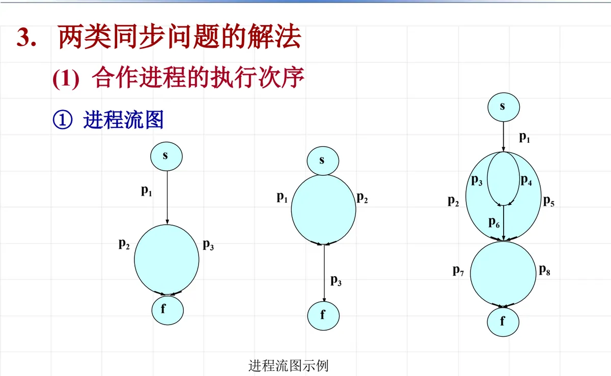
设 pa、pb、pc 为一组合作进程，其进程流图表明：任务启动后 pa 先执行；pa 结束后 pb、pc 可以开始执行；pb、pc 都执行完毕后任务终止。分析同步关系之后设置两个同步信号灯 sb、sc，分别表示进程 pb 和 pc 能否开始执行，初值均为 0（一开始都不允许开始）。于是同步描述非常简短：pa 在执行完自己的工作后连做 v(sb)、v(sc) 两次 V 操作，pb、pc 则各自在开始处做一次 p(sb)、p(sc)。
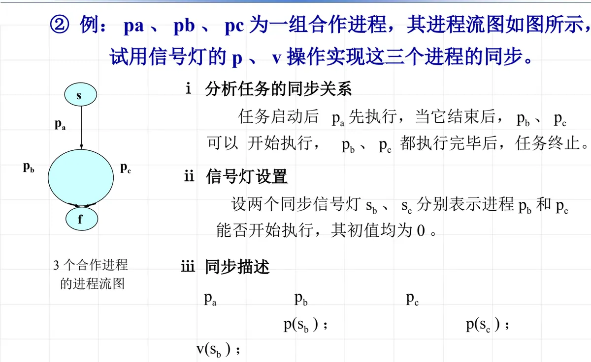
写成程序 task4 就是下面的样子。主程序定义 sb、sc 两个信号灯，初值都为 0，然后并发启动三个进程。
/* 程序 task4 */
main( )
{ int sb = 0; /* pb 能否开始 */
int sc = 0; /* pc 能否开始 */
cobegin
pa( ); pb( ); pc( );
coend
}
pa( )
{ ……
v(sb);
v(sc);
}
pb( )
{ p(sb);
……
}
pc( )
{ p(sc);
……
}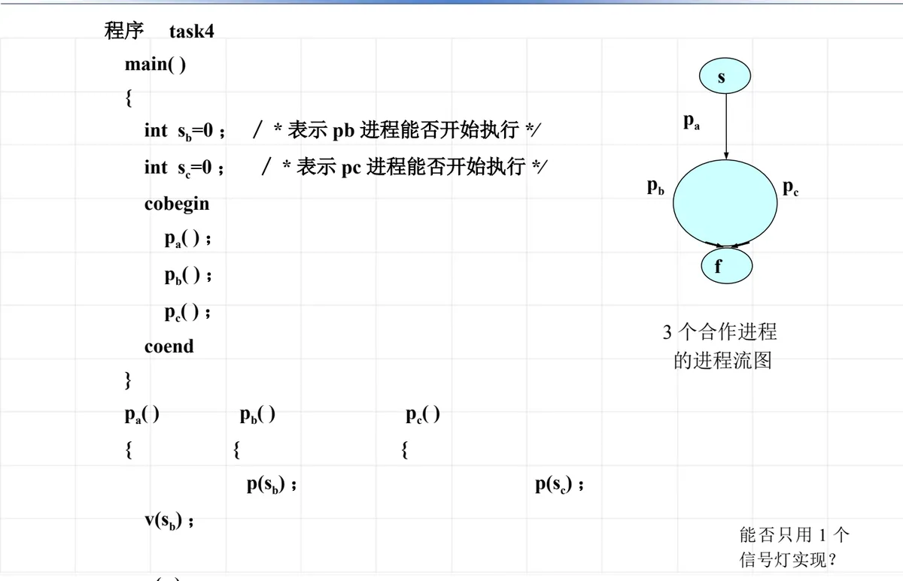
课件随后给出了两组练习题，用于检验是否掌握了由进程流图反推同步描述的方法：习题 4-13 要求用信号灯实现两组进程之间的同步并写出程序描述，作业题则在更复杂的流图上作同样的练习。
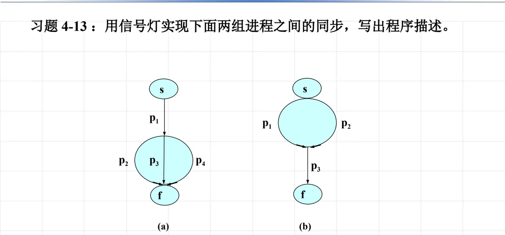
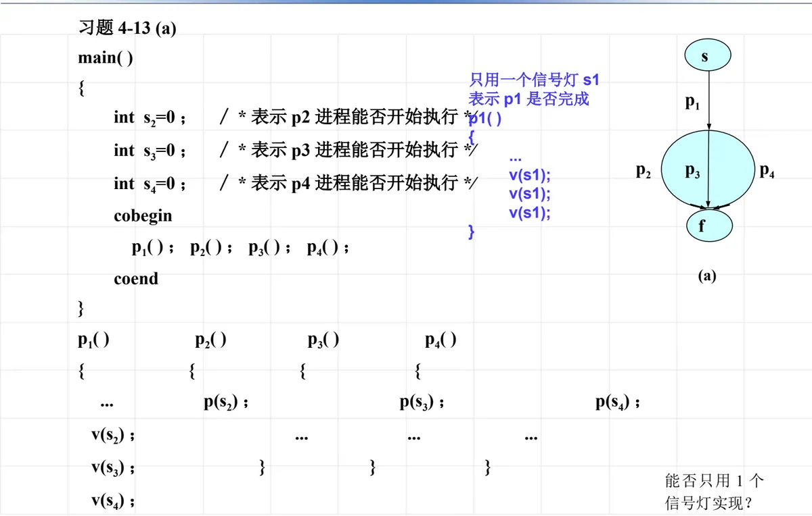
（2）共享缓冲区的合作进程的同步
第二类同步问题的场景是：计算进程 cp 经过计算把结果送入缓冲区 buf，打印进程 iop 再从 buf 中把数据取出打印，两者通过 buf 交换数据。这类问题的同步关系是双向的——cp 必须先送、iop 才能取；iop 取走之前缓冲区不能覆盖，cp 必须等空位置。
据此设置两个同步信号灯：sa 表示缓冲区中是否有可供打印的计算结果，初值为 0；sb 表示缓冲区有无空位置存放新的信息，初值为 1。程序描述如下。
main( )
{ int sa = 0; /* buf 中有无信息 */
int sb = 1; /* buf 中有无空位 */
cobegin
cp( ); iop( );
coend
}
cp( )
{ while(计算未完成) {
得到一个计算结果;
p(sb);
将数送到缓冲区中;
v(sa);
}
}
iop( )
{ while(打印工作未完成) {
p(sa);
从缓冲区中取一数;
v(sb);
从打印机上输出;
}
}对照着看：cp 在送数之前用 p(sb) 申请一个空位置，送完用 v(sa) 通知「有数据了」；iop 用 p(sa) 等待数据，取走后用 v(sb) 归还空位置。sa 与 sb 一个代表满、一个代表空，正好把缓冲区的两种状态管起来。
课件进一步把这种结构推广到两个缓冲区的情形（习题 4-15）：get 进程把数据读入缓冲区 s，copy 进程把 s 中的数据搬到缓冲区 t，put 进程再把 t 中的数据取出输出，需要为相邻的两对进程分别设置同步信号灯。习题 4-18 则给出另一组三进程并发活动的流程图与同步算法描述（其中信号灯 s 的初值取 −1，由 p1、p2 各做一次 V 操作、p3 做一次 P 操作），并要求判断下面这段两进程访问临界资源的算法是否有错、错在哪里、如何改正：
a 进程 b 进程
while(1) while(1)
{ CSa; { P(s1);
V(s1); CSb;
P(s2); V(s2);
} }
/* 注：信号灯 s1、s2 的初值为 0 */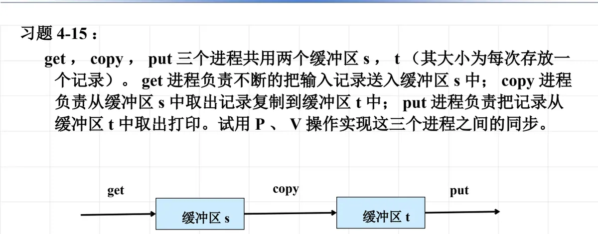
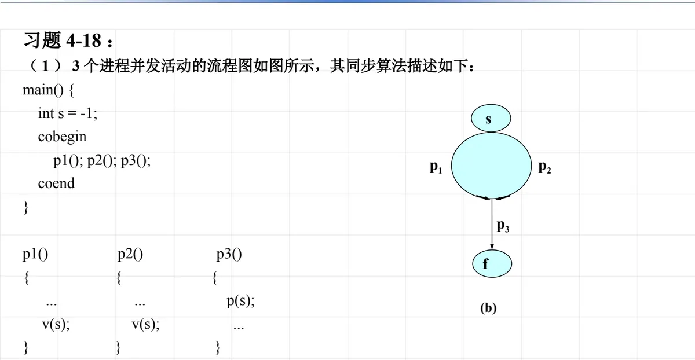
4. 生产者—消费者问题
（1）问题的由来
前面两类问题的共同结构，其实是一个更一般的模型。课件举了两个来源：其一是计算进程与打印进程——多个计算进程 cp 不断产生数据，是生产者；多个打印进程 iop 不断打印数据，是消费者；两者之间有多个缓冲区。其二是通信问题——发消息进程 send 不断产生消息，是生产者；收消息进程 receive 不断接收消息，是消费者。把「生产者把产品放进有界缓冲区、消费者从有界缓冲区取走产品」这一结构抽象出来，就是生产者—消费者问题。
（2）生产者—消费者问题的一般解答
设有 m 个生产者 p1, p2, …, pm 和 k 个消费者 c1, c2, …, ck，它们共享一个有 n 个位置的有界缓冲区。同步关系有两方面：
- 生产者：当有界缓冲区中没有空位置时，要等待；向有界缓冲区放入物品后，要发消息（通知消费者）；
- 消费者：当有界缓冲区中没有物品时，要等待；从有界缓冲区取出物品后，要发消息（通知生产者）。
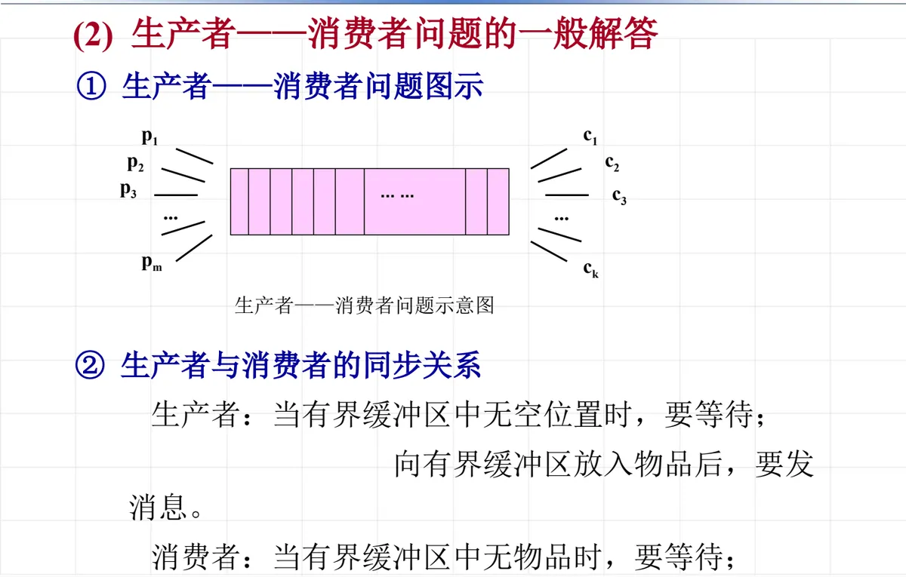
据此设置三个信号灯：两个同步信号灯 sb（表示空缓冲区的数目，初值 = n）与 sa（表示满缓冲区，即信息的数目，初值 = 0），再加一个互斥信号灯 mutex（表示有界缓冲区是否被占用，初值 = 1）。同步描述为：生产者先生产，再 p(sb) 申请空位置、p(mutex) 申请缓冲区使用权，把数据放入有界缓冲区后 v(mutex) 释放缓冲区、v(sa) 通知有数据可取；消费者的次序正好相反，先 p(sa) 等数据、p(mutex) 申请缓冲区，取出数据后 v(mutex)、v(sb)，最后消费。
main( )
{ int sa = 0; /* 满缓冲区的数目 */
int sb = n; /* 空缓冲区的数目 */
int mutex = 1; /* 缓冲区的互斥灯 */
cobegin
p1( ); p2( ); … pm( );
c1( ); c2( ); … ck( );
coend
}
pi( )
{ while(生产未完成) {
生产一个产品;
p(sb);
p(mutex);
送一个产品到有界缓冲区;
v(mutex);
v(sa);
}
}
cj( )
{ while(还要继续消费) {
p(sa);
p(mutex);
从有界缓冲区中取产品;
v(mutex);
v(sb);
消费一个产品;
}
}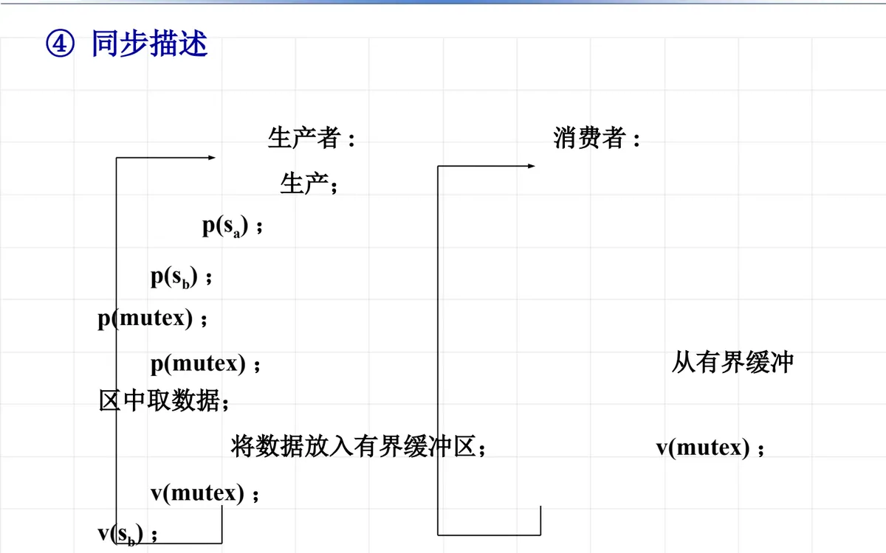
这里 sa、sb、mutex 的分工要分清：sa 与 sb 管的是「有没有东西可拿／有没有地方可放」，是同步；mutex 管的是「同一时刻只能有一个人动缓冲区」，是互斥。三者在两个进程里的先后次序不能随意交换——下一章 5.3 节讲死锁时，会拿生产者—消费者问题为例说明 P 操作次序颠倒的后果。
本节小结
- 互斥的两种实现：锁变量 w 加上锁/开锁原语（初值 0，进入临界区前上锁、离开后开锁），以及互斥信号灯 mutex（初值 1，临界区前后各做一次 P、V 操作）；
- 信号灯的取值可读出系统状态：两进程互斥时只取 1、0、−1；n 个进程互斥时可取 1, 0, −1, …, −(n−1)。正值表示还可使用的资源数，负值的绝对值表示等待队列中的进程数；
- 同步问题的解法是「画进程流图 → 分析同步关系 → 设信号灯 → 写程序描述」。执行次序问题的信号灯初值为 0，靠前驱进程的 V 操作启动后继进程；
- 共享缓冲区问题要设两个同步信号灯（一个管满、一个管空）；生产者—消费者问题在此之上再加一个互斥信号灯管缓冲区本身，即 sa（满，初值 0）、sb（空，初值 n）、mutex（互斥，初值 1）三者的配合；
- 这一节的所有例子——共享变量、看病化验、pa/pb/pc 合作进程、cp/iop、get/copy/put、生产者—消费者——都是同一套机构在不同场景下的应用，看懂一个就要能迁移到其余几个。